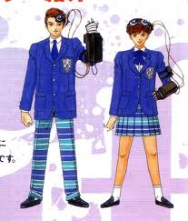

- 주인공의 성별
- 주인공의 이름
- 노바의 질문
- 결과 - 주인공의 초기 파라미터
주인공의 성별

주인공의 성별에 의한 변화
- 가디언이 다르다.
- 주인공과 파트너의 초기 파라미터가 여성의 경우에 비해 남성이 HP+5된다.
- 회화의 내용이 미묘하게 다르다.
- 학교 체육관에 출현하는 보스가 다르다. (남성：마수 メリージェンヌ, 여성：마수 フォーン)
- 여성의 경우, 오만계에서 마계의 아저씨로부터 장비품을 받을 수 있다.
성별에 의해 착용 가능한 장비
- 남자의 경우는 공격력이 더 높은 편이고, 여자는 방어력과 내성이 높은 편이다.
- 카지노에서 코인 교환으로 얻는 아이템 대부분이 남성용이다.
주인공의 이름
주인공의 이름을 AAAAA 같이 연속된 이름을 붙이면 노바가 화를 낸다.
노바의 질문
시작 후 이름과 성별을 지정하면 노바의 질문이 있다. 성별과 질문의 답에 따라 가디언의 타입이 결정된다.
노바의 질문에 대한 답은 각각
파워 타입,
스피드 타입,
밸런스 타입,
럭키 타입 4종류의 타입에 대응된다.
| 질답표 |
| 파워 타입 |
스피드 타입 |
| 밸런스 타입 |
럭키 타입 |
일반적인 질문들은 위의 표와 같은 순서로 배열되어 있다. 만일 스피드 타입을 원한다면 질문에 대해 우측 상단의 답을 선택하면 된다.
럭키 타입의 경우 한 차례 질문이 더 있다. (남녀 주인공이 입고 있는 팬티에 대한 질문...)
결과 - 주인공의 초기 파라미터
| 타입 |
HP 남／여 |
MP |
힘 |
마력 |
지력 |
체력 |
속도 |
운 |
합계 |
| 파워 타입 |
２１／１６ |
－ |
７ |
２ |
２ |
７ |
４ |
２ |
２４ |
| 스피드 타입 |
１９／１４ |
－ |
５ |
２ |
２ |
５ |
７ |
３ |
２４ |
| 밸런스 타입 |
１８／１３ |
－ |
４ |
４ |
４ |
４ |
４ |
４ |
２４ |
| 럭키 타입 |
１８／１３ |
－ |
４ |
３ |
３ |
４ |
６ |
８ |
２８ |
질답의 결과에 의해 초기 파라미터가 결정
결과가 럭키 타입의 경우 5000마카를 받을 수 있다.